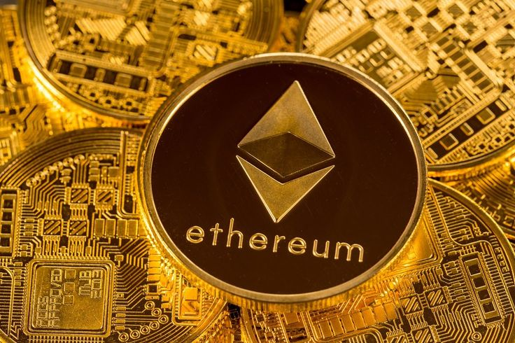
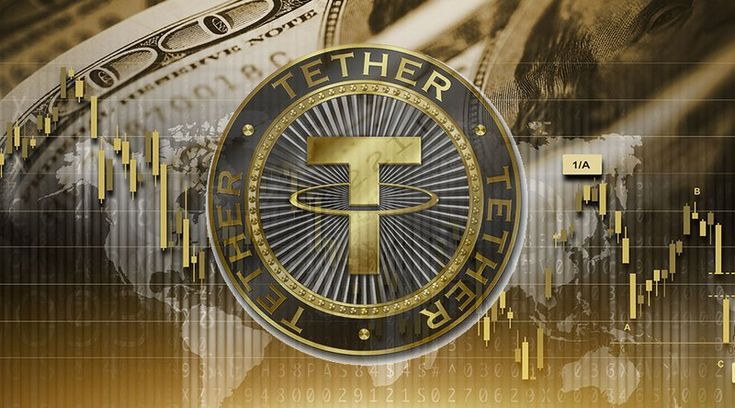
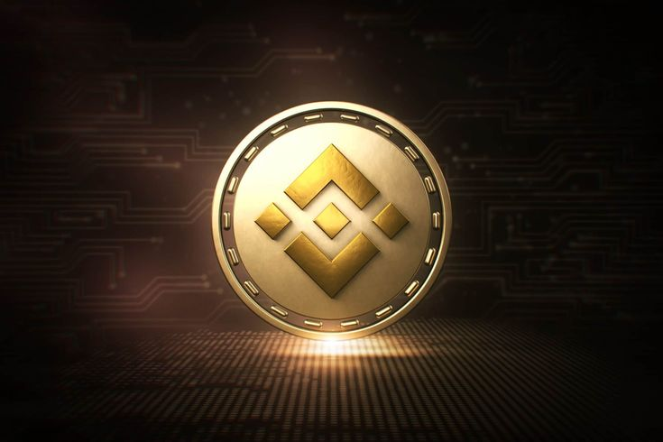
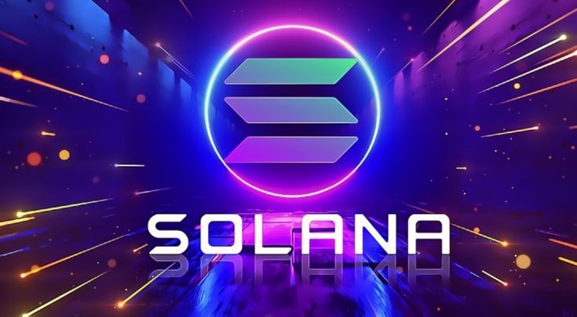

Bitcoin (BTC) is the first decentralized cryptocurrency, created by an unknown person or group
under the pseudonym Satoshi Nakamoto. Launched in 2009, Bitcoin revolutionized digital finance
by enabling peer-to-peer transactions without the need for intermediaries like banks. It operates
on a blockchain, which is a decentralized ledger that ensures transparency and security. The total
supply of Bitcoin is capped at 21 million coins, making it a deflationary asset designed to resist
inflation over time. Bitcoin's consensus mechanism, Proof-of-Work (PoW), involves miners solving
complex mathematical problems to validate transactions and secure the network. It is widely
recognized as "digital gold" due to its store of value properties, often compared to precious
metals like gold. The value of Bitcoin has fluctuated greatly, with significant price increases
during major market rallies, leading it to become the most valuable cryptocurrency by market
capitalization. Despite its volatility, Bitcoin remains a critical player in the cryptocurrency
market, often influencing the performance of other cryptocurrencies. Bitcoin's adoption has grown
globally, with institutions, businesses, and even governments exploring its potential as both a
currency and an investment asset. As of 2024, Bitcoin continues to lead the crypto market, with a
market capitalization exceeding $1 trillion. Learn More
2. Ethereum (ETH)

Ethereum (ETH) is a decentralized blockchain platform that was created by Vitalik Buterin and launched
in 2015. Unlike Bitcoin, which is primarily a digital currency, Ethereum enables developers to
build and deploy decentralized applications (DApps) through its innovative feature, smart contracts.
These self-executing contracts automate processes and eliminate the need for intermediaries, making
transactions more efficient and secure. Ethereum operates on a Proof-of-Work (PoW) mechanism, but
it transitioned to Proof-of-Stake (PoS) in 2022, significantly improving energy efficiency and
scalability. With Ethereum's smart contract functionality, various decentralized finance (DeFi)
protocols, as well as non-fungible tokens (NFTs), have flourished, expanding the ecosystem. The
platform also serves as the foundation for many blockchain projects, establishing Ethereum as a
leading player in the crypto space. Ethereum's native cryptocurrency, Ether (ETH), is used to pay
for transaction fees and computational services on the network. The Ethereum network continues to
evolve with future updates planned to improve its scalability, security, and usability. With its
active developer community and wide adoption, Ethereum remains one of the most influential and
valuable cryptocurrencies globally. Despite facing competition from other blockchains, its
innovations in smart contracts and decentralized applications solidify Ethereum's pivotal role in
shaping the future of the digital economy. Learn More
3. Tether (USDT)

Tether (USDT) is a stablecoin that was created to maintain a consistent value, typically pegged to
the US dollar. Launched in 2014, it provides a way for traders and investors to move assets without
the volatility typically associated with cryptocurrencies. The coin is backed by reserves of fiat
currencies and other assets, with each USDT token being redeemable for one US dollar. This backing
ensures that Tether holds a 1:1 peg to the USD, making it ideal for risk-averse investors seeking
stability within the crypto market. Tether is widely used on cryptocurrency exchanges, offering
liquidity for traders who want to exit volatile positions or hold value without converting to fiat
currency. While its transparency has occasionally been questioned, Tether maintains regular audits
to prove that its reserves are in place to support the issued coins. As of 2024, it has a market
capitalization of over $110 billion, making it one of the largest cryptocurrencies by market cap.
Many exchanges and DeFi platforms use Tether to facilitate easy transfers of funds and as a
reference for pricing other tokens. Tether is also used for remittances, allowing for relatively
quick, low-cost international transfers. Its use of blockchain technology enables secure and
efficient transactions, which contributes to its widespread adoption in the crypto ecosystem.
Learn More
4. Binance Coin (BNB)

Binance Coin (BNB) is the native cryptocurrency of the Binance ecosystem, created in 2017 by the
Binance exchange, one of the largest and most popular crypto platforms globally. Initially
launched as an ERC-20 token on Ethereum, BNB later migrated to Binance's own blockchain, Binance
Chain, to improve transaction speeds and reduce fees. The primary use case for BNB is to pay for
transaction fees on the Binance exchange, offering users discounts on trading costs. Over time,
BNB has expanded its functionality, now supporting decentralized finance (DeFi) projects,
decentralized exchanges, and even non-fungible tokens (NFTs). BNB also powers Binance Smart Chain
(BSC), a blockchain network designed for decentralized applications (DApps) and smart contracts,
providing an alternative to Ethereum with faster transaction times and lower fees. The coin's
utility has grown as it can be used for paying transaction fees across the Binance ecosystem,
including Binance DEX and Binance Launchpad. BNB has undergone several coin burns
(reducing its total supply) to maintain its value and scarcity, which is a key element in its
deflationary mechanism. The token has a strong community backing and is often used for staking
within Binance's ecosystem. In 2024, BNB maintains a market cap of over $100 billion, making it
one of the top cryptocurrencies by market capitalization. Its success is largely
attributed to Binance's continuous innovation and expansion, including its transition to Web 3.0
applications. Furthermore, BNB's role within the Binance ecosystem helps drive its value, with
many users leveraging it for practical purposes such as paying for services, purchasing tokens,
and participating in token sales. The coin's overall versatility and solid backing within a major
exchange ecosystem contribute to its widespread adoption and long-term growth potential.
Learn More
5. Solana (SOL)

Solana (SOL) is a high-performance blockchain designed to offer scalable decentralized applications
(DApps) and cryptocurrency transactions. Launched in 2020, it has gained popularity for its speed
and low-cost transactions. Solana uses a unique consensus mechanism called Proof-of-History (PoH),
which timestamps transactions to increase efficiency and improve transaction throughput. This
innovation allows Solana to process over 65,000 transactions per second (TPS), making it one of
the fastest blockchains in the market. Unlike other blockchains, Solana combines Proof-of-Stake
(PoS) and PoH to achieve high scalability without compromising on decentralization. The network's
low transaction costs, often under $0.01, make it a competitive alternative to Ethereum, especially
for developers and users looking for cost-effective solutions. Solana has become a prominent player
in the DeFi space and is also widely used for Non-Fungible Tokens (NFTs), gaming applications, and
decentralized finance protocols. Its ecosystem includes a variety of projects ranging from
decentralized exchanges to lending platforms and NFT marketplaces. As of 2024, the Solana
blockchain has a market cap of over $75 billion, with a growing community of developers and
enthusiasts. Solana's native token, SOL, is used for transaction fees, staking, and governance
within the network. Despite facing some network outages, Solana continues to innovate and expand,
positioning itself as one of the leading blockchain platforms. Learn More